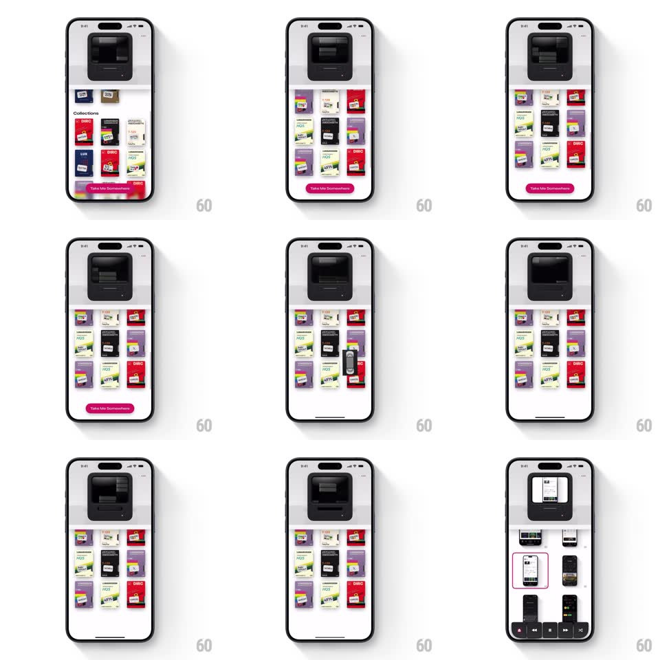

Media
Frame-by-frame

Rebuild this interaction 1:1: Cassette's tape insert - picking a VHS from the shelf slides it up into the deck slot at the top, then the deck view flips into the video gallery.

Rebuild this interaction 1:1: Cassette's tape insert - picking a VHS from the shelf slides it up into the deck slot at the top, then the deck view flips into the video gallery.
## Integration
Integration: stack-agnostic spec - springs given as stiffness/damping, timed motions as duration + curve; map every value to your framework and animation library of choice.
## Scene
Light screen with a skeuomorphic black VHS deck at top and a shelf grid of tape covers below ("Years", "Collections" sections, "Take Me Somewhere" pink button). After insert: the deck shows the loaded tape and the gallery of clips appears beneath with playback controls.
## Motion spec
Pattern: skeuomorphic pick-and-insert, ~800ms.
- Pick: the tapped tape scales up slightly (1.05, 150ms), lifts out of the grid (y -40px, 200ms), then slides up into the deck slot (350ms, ease-in) shrinking to fit the slot width; the shelf gap closes (spring ~320/26, 300ms).
- Load: the deck's window flickers (two 60ms opacity dips) as the tape seats, then the inserted tape's label renders in the deck window (200ms fade).
- Reveal: the clip gallery slides up under the deck (spring ~300/24, 400ms) with thumbnails popping in (40ms stagger).
- Eject: tapping the deck reverses the sequence - the tape slides back to its shelf slot.
## Calibration
- The tape travels in a straight vertical path from cell to slot - no arc.
- The deck is always visible; the shelf scrolls beneath it.
## Reduced motion
The tape fades into the deck window (250ms) without travel.
## Don't miss
- The tape resizes to the slot mid-flight - it never overlaps the deck frame.
- The load flicker sells the hardware; skipping it makes the insert feel digital.